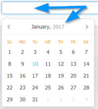
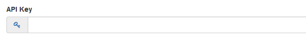

Enter email address. Used for certain email notifications. For example, journal notification of the 'admin/control/access.php' user. It is also
the reply to email if not set in the SMTP settings.
General > Base Folder
HTTP path to journal/blog folder with trailing slash. For example:
Preferred journal timezone. Overrides server settings. Add/manage timezones in:
control/timezones.php
Date/Time > Javascript Calendar Format
When you click in date boxes a calendar appears, this is powered by javascript.

Specify preferred formats. Manage formats in:
admin/control/arrays.php
Date/Time > Week Start
Specify week start day for calendar. For example, UK is Sunday.
Meta/SEO > Meta Description
Meta tags aren`t really necessary for search rankings these days, but adding them does no harm. Enter meta description.
Meta/SEO > Meta Keywords
Meta tags aren`t really necessary for search rankings these days, but adding them does no harm. Enter meta keywords, comma delimited.
Meta/SEO > Search Engine Friendly Urls
Better urls for search engines. This should be enabled for better search rankings.
Example of url with search engine friendly urls OFF:
http://www.example.com/blog/?j=1
Example of url with search engine friendly urls ON:
http://www.example.com/blog/my-journal-entry
If this is enabled the 'htaccess_COPY.txt' file MUST be renamed to .htaccess
Options > Default Categories
Default categories are pre-populated when you add a new journal.
Options > API Key
If you wish to utilise the Maian Weblog API you must create an API key to use in your requests, this will determine
if the requests are valid or not.
Click the icon to auto generate API key.

Options > Log API Requests
If set, logs all requests to 'logs' folder. Can be useful for debugging. Log folder location can be changed in the following file:
control/classes/class.api.php
Options > Enable Cache
If enabled, reduces database load. Instead of repeated database queries, data will be loaded from cached data. This is recommended.
Options > Rebuild Cache File If File Older Than
If set, rebuilds cache folder after specified amount of time. Not necessary, but can help if cache files become corrupt.
Footers > Public Footer
For commercial version ONLY. Enter your own footer data. HTML can be used here, but only use valid HTML5 so as not to break the
responsive system.
Footers > Admin Footer
For commercial version ONLY. Enter your own admin footer data. HTML can be used here, but only use valid HTML5 so as not to break the
responsive system.